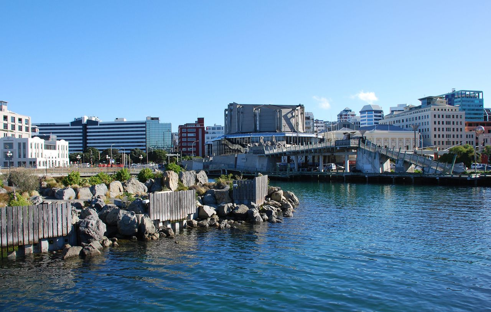

Popular Cities

Auckland
Auckland is New Zealand's largest, most cosmopolitan urban centre, beautifully framed by two sparkling harbours and a volcanic landscape of 53 dormant cones. Known as the "City of Sails," its unique geography blends high-end urban lifestyle with immediate access to natural marine playgrounds. Visitors can scale the iconic Sky Tower for unparalleled panoramic views, explore the chic eateries of the waterfront, or step back in time at the world-class collections inside the Auckland War Memorial Museum.
Learn More ↩
Wellington
Wellington, the nation's vibrant capital, is a compact coastal city celebrated as New Zealand's ultimate hub for arts, culture, and culinary excellence. Tucked tightly between a spectacular harbor and rolling green hills, it boasts a famously walkable downtown area bustling with independent fashion boutiques and experimental theatres. The city's crown jewel is Te Papa Tongarewa, the interactive national museum that showcases the country's rich Maori history, geological origins, and natural environment completely free of charge.
Learn More ↩
Christchurch
Christchurch is a beautifully transforming gateway city that masterfully combines traditional English heritage with bold, modern architectural design. Celebrated internationally as the "Garden City," its urban landscape is defined by expansive green spaces, including the expansive Hagley Park and the tranquil Christchurch Botanic Gardens. A signature experience here includes a classic punt ride down the serene Avon River, where a chauffeur gently guides you past weeping willows and elegant historic riverbanks.
Learn More ↩